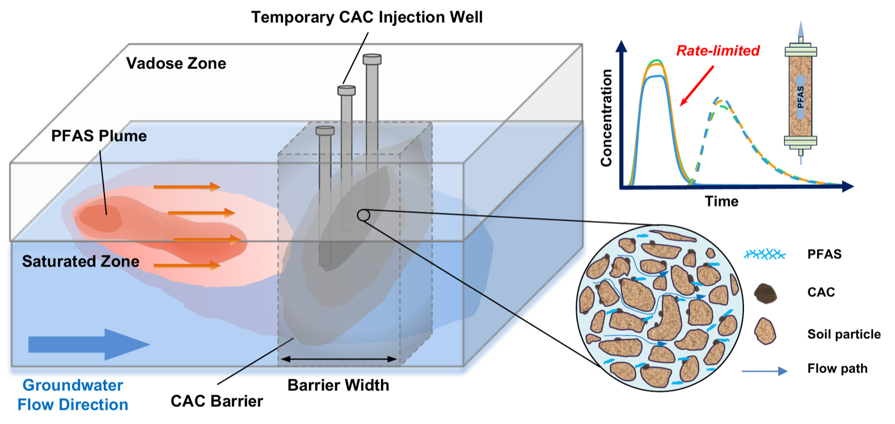
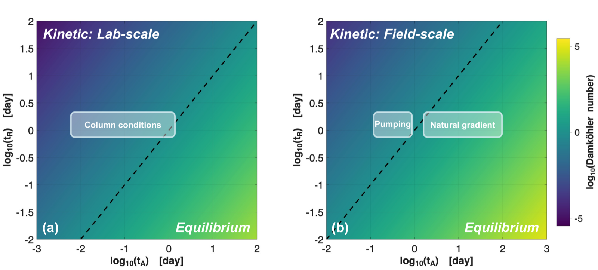
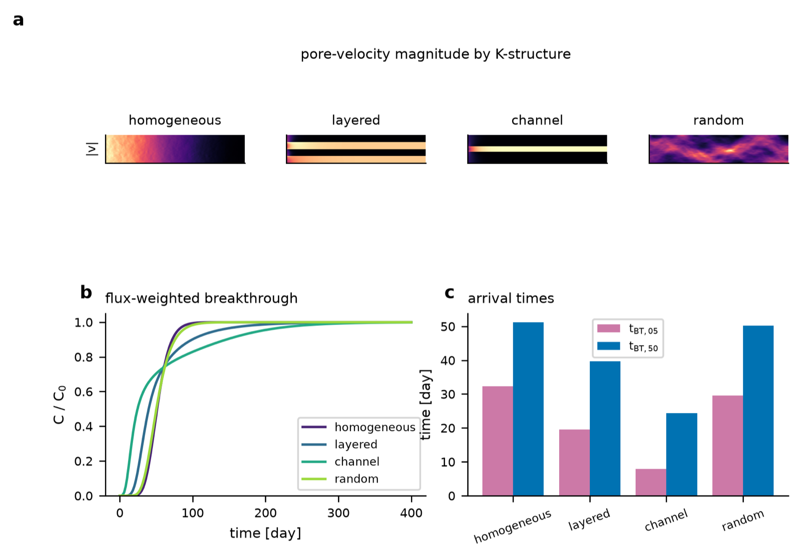

Zijie Zheng
Environmental Engineering | Contaminant Transport | Groundwater Remediation | Numerical Simulation
I am a Ph.D. researcher in environmental engineering at The University of Texas at Austin. I study how PFAS move through and are retained by carbon-amended aquifers, combining column experiments with reactive transport modeling. My goal is to turn laboratory-scale sorption and mass-transfer measurements into predictions that hold up at the field scale, where remediation decisions are actually made.
Research Highlights

Mass transfer, not capacity, controls PFAS breakthrough
Colloidal activated carbon (CAC) is injected into an aquifer to form a sorptive barrier across a PFAS plume. Sizing that barrier from equilibrium capacity assumes PFAS reaches the carbon as fast as water carries it past — but at the pore scale, PFAS must first transfer from the flow paths onto CAC surfaces, and that step takes time. When it is slow relative to the residence time in the barrier, PFAS breaks through while most of the sorption capacity is still unused.

Which regime a system falls in collapses onto a single Damköhler number, the ratio of the advective residence time tA to the mass-transfer time tR. The dashed Da = 1 line splits kinetic control (upper left) from local equilibrium (lower right). Column experiments sit well onto the kinetic side (a), so lab data cannot be extrapolated with an equilibrium model. At field scale (b) natural-gradient flow falls near equilibrium, but pumping pulls the same barrier back into kinetic control — which is exactly where equilibrium sizing overpredicts barrier lifetime.

Preferential flow lets PFAS bypass the barrier
Extending the model to two dimensions shows that how CAC is distributed matters as much as how much is emplaced. Channelized conductivity structures route flow around treated zones, cutting the time to 5 % breakthrough by roughly a factor of four relative to a homogeneous aquifer with identical average properties — a failure mode invisible to column-scale testing.